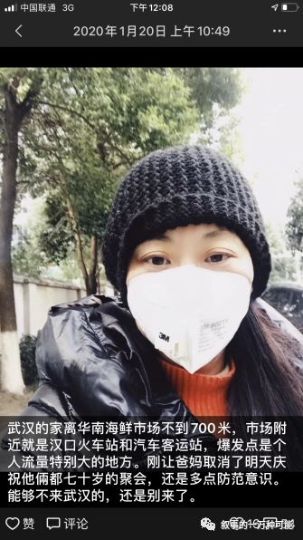

武汉同济医院一线医生口述：每天面对死亡，紧张但不恐惧——专访武汉同济医院心内科医生赵金召 - 经济观察网 － 专业财经新闻网站
原文链接 备份链接 经济观察网 记者 张晓晖 在这次始自武汉、蔓延至全国的新型冠状病毒肺炎疫情中，华中科技大学同济医学院附属同济医院（以下简称“武汉同济医院”）是武汉最早收治非冠病患的几家医院之一。 武汉同济医院历史悠久，其1900年由同 …
过去的十天，是打仗一般的日子。多数人都没有料到，中国将度过一个如此特殊的春节。对我而言，从1月21日发起并参与《三联生活周刊》对新冠肺炎的报道，我迅速经历了从回家度假到进入“战斗”状态的过程。哪怕才过十天，回想起从1月21日开始的经历，都有一种不真实感。
我是1月17日坐高铁，从北京回到汉口的。我父母和弟弟一家住一起，住址就在汉口火车站旁边，走路三分钟。这也意味着，武汉的家距离华南海鲜市场不到1公里。回家前，我陆续续看到武汉有不明肺炎的消息，但是不觉得很严重。而且今年碰上我爸妈都70岁，他们等着我们一家三口回家，然后定下1月21日跟亲戚们共30人一起聚会。
1月17日夜里，我们到了汉口站，弟弟是戴着口罩接我们的，在人群中属于少数人。接下来几天，我爸照常每天一早去菜市场买菜，还带着我弟弟和我老公一起去，因为菜市场旁边有好吃的牛肉面。我当时就提醒他们，去人多的地方戴口罩呀，大家也就听听。
到了1月20日，早上一起来，我觉得我必须对眼下的肺炎有个态度了。因为明天全部亲戚大聚会，如果肺炎比较严重，肯定应该取消聚会。我心里稍有迟疑，爸妈70岁是个大事，我这么做在武汉话里叫“打破”，是非常讨人嫌的。但我的态度很明确，应该一一通知亲戚，取消聚会。难得的是，爸妈比我预计的要开明。心里肯定失落，但按照我说的做了。但亲戚们仍有即将互相串门拜年的想法，只是嘱咐少送东西，不要太客气。
这天我发了一个朋友圈，虽然当时对武汉肺炎的严重程度还不知晓，但2003年2月我刚到《三联生活周刊》上班，就遇到了SARS报道。凭着模糊的感觉，我觉得武汉这个时候应该禁止人员的流动了。武汉是个九省通衢的交通枢纽，所以显然这个时候要禁的，是个全国性的流动。但是在春节还有几天就要到来的时候，那么多人盼着回家团聚，还没有人用“疫情”来形容这事的时候，当时没有足够的信息，引起足够多人的理性行为。

我发的这个朋友圈，在北京的朋友们反馈比较多。有人说正取消回湖北老家过年的计划，有人成功阻止了朋友回湖北。武汉亲戚朋友们的反馈比较少，不觉得这是个事。
这天下午发生了一则不幸的新闻，北京朝阳医院的眼科主任陶勇被砍伤。我一直关注医疗新闻，也非常主张三联必须对伤医事件发声。一个社会如此严重地伤害医生，必须有公共媒体发声。所以即使在武汉家里，我开始积极联系这件事情的采访。一旦进入工作状态，我心里又开始有了一个判断：马上召集记者来武汉，不明肺炎的报道应该是个大事。我给主编李鸿谷打了个电话，他也认为应该有记者去武汉。同事王珊在我们做决定之前，已经跟我说，愿意到武汉做肺炎报道。我在社会部记者群里问了一嘴，然后正在湖北咸宁家里休假的记者张从志，也决定加入报道。
1月21日下午，我们三个就住进了武汉金银潭旁边的一家酒店，然后迅速开始了解情况。两位记者去华南海鲜市场摸情况，我一边做朝阳医院伤医事件的电话采访、赶微信稿，一边询问武汉的医生朋友。我们从几条线索摸到的情况，以及所得到的答复是：肺炎情况非常严重！看来我们作为记者的敏感没有错。
一位刚刚到武汉调查了一圈的专家，给我们记者的建议是：你们不知道怎么防护，赶紧离开，情况非常严重！医生朋友的说法是，一线医生早就预警，情况非常严重！我们通过朋友关系问到武汉另一个医院的医生，说法一样。几方反馈汇合到一起，让我们在1月22日推出第一篇报道时，对于如何提出问题的严重性，心里有底。

（我们的公众号仍然每天在推出好几篇关于新冠肺炎的报道，所以我很难有完整的时间写文章。先简单做点记录，会接着写，虽然写得非常匆忙。）
Hi吴琪
长按二维码向我转账
受苹果公司新规定影响，微信 iOS 版的赞赏功能被关闭，可通过二维码转账支持公众号。
原文链接 备份链接 经济观察网 记者 张晓晖 在这次始自武汉、蔓延至全国的新型冠状病毒肺炎疫情中，华中科技大学同济医学院附属同济医院（以下简称“武汉同济医院”）是武汉最早收治非冠病患的几家医院之一。 武汉同济医院历史悠久，其1900年由同 …
原文链接 备份链接 武汉抗“疫”27日考：追忆那些被贻误的宝贵时机 2020-01-26 20:28 作者：张家振 来源：中国经营网 本报记者 张家振 武汉报道 （武汉抗“疫”一线的逆行者。） 1月24日，除夕夜。39岁的张琴（化名）和丈 …
原文链接 备份链接 120一线护士：拉着病人却送不进医院丨武汉肺炎亲历 2020-01-25 21:10 作者：晏耀斌 来源：中国经营网 本报记者 晏耀斌 武汉报道 1月25日，大年初一，护士高琴（化名）一早就随着120出诊了，她在武汉一 …
原文链接 备份链接 这注定是一个难捱的春节。 截至1月23日24时， 全国确诊新型肺炎病例830例， 死亡25例。 截至1月23日晚，中国新型肺炎疫情地图（来源：丁香医生） 同时，国际确诊案例也陆续出现。 截至1月23日，数据如下： 泰 …
原文链接 备份链接 “人如果在家里死了，是留不下这个人的记录的，没人知道他是因为肺炎死的。” 口述 | 李雪（化名） 记者 | 张从志 床位极度紧缺 ▲▲▲ 父亲今年64岁，武汉人，公务员退休。从1月17日确认感染后，他的食欲变得非常差， …